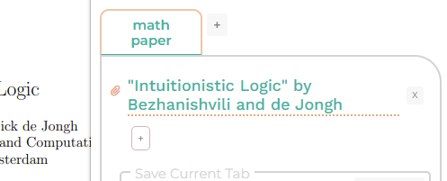
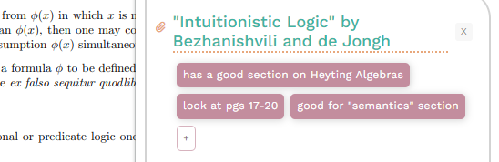
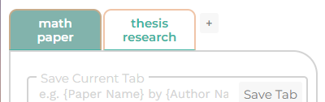

Organize and keep track of your online sources with names and notes! Feeling lost? Click the help button above!
Whenever you're on a tab that you'd like to save the link to, open up the extension, and in the "Save Current Tab" box, give the tab's link a name you'd like to find it with later, and click on the "Save Tab" button to save it!
Your links are saved in the order you save them, and are marked by the little paperclip icons. Click on them to open the links up in a new tab!
To delete a link, click on the "x" button beside it. This is irreversible, so be careful!
To keep track of your saved links, click the "+" button underneath a link to add a descriptive tag (or two, or like, literally as many as you need!)
To delete a tag, simply double click on it. This is irreversible, so be careful!
To keep your links organized, you can create projects to group them together. To create a project, click on the "+" button next to the project tabs.
Edit your projects' names by directly clicking on them and typing in a new name.
To delete a project, scroll to the bottom of its contents and click the "Delete Project" button. This is irreversible, so be careful!